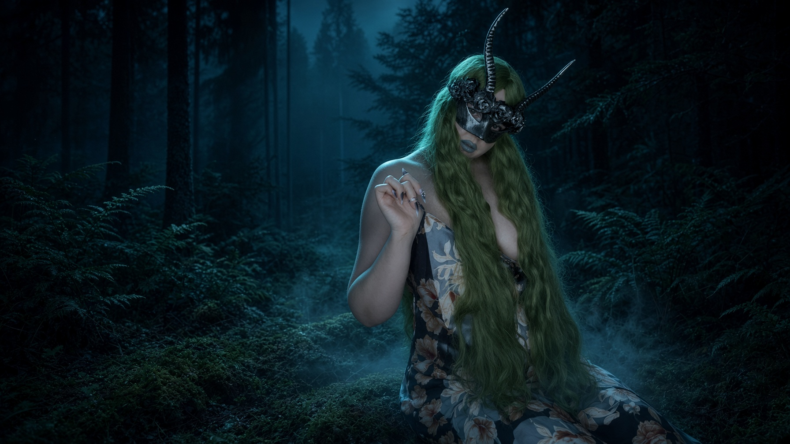

I am a mathematician who never stopped being fascinated by things that cannot be measured.
Nature feeds me. I pay attention to its textures, rhythms, silence and wildness. I carry that feeling into everything I create.
Everything has a pattern. Even desire has structure — rhythm, tension, distance and timing.
Wanting deserves time. I am interested in anticipation, atmosphere, intimacy and the space between looking and touching.
Warmth is not access. I choose what I create, who I share it with, and how close anyone gets.
I don't want to be impossible to resist. I want to be impossible to replace.
Enter my forest →